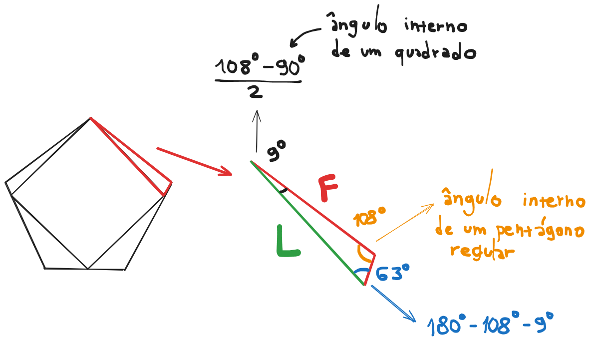

beecrowd 1292 · lei dos senos
Problema com um Pentágono
Relacionar o lado do pentágono regular ao lado do quadrado interno por meio de um triângulo.
Primeiro, descubra os ângulos
O ângulo interno de um pentágono regular mede 108°. A construção do quadrado cria dois ângulos iguais ao redor do ângulo reto:
9° = (108° - 90°) / 2
O terceiro ângulo do triângulo completa 180°:
63° = 180° - 108° - 9°

Lei dos senos
Na lei dos senos, cada lado é dividido pelo seno do ângulo oposto. O lado L
do quadrado fica oposto a 108°, enquanto o lado F do pentágono fica oposto a 63°.
L / sen(108°) = F / sen(63°) ⇒ L = F · sen(108°) / sen(63°)
Conversão obrigatória:
math.sin recebe radianos. Use math.radians(108) e math.radians(63).Triângulo da construção
sen(108°)
sen(63°)
L / F
A proporção não muda
Os ângulos são fixos, então sen(108°)/sen(63°) é uma constante. Se F dobrar,
L também dobra. Cada caso requer apenas duas funções trigonométricas e uma multiplicação.
TempoO(1)
MemóriaO(1)
Saída10 casas
Lei dos senos em PythonAbrir 1292.py
import math
import sys
def lado_do_quadrado(lado_do_pentagono):
# Pela lei dos senos: L / sen(108°) = F / sen(63°).
# math.sin recebe radianos, então convertemos os dois ângulos.
return (
lado_do_pentagono
* math.sin(math.radians(108.0))
/ math.sin(math.radians(63.0))
)
def main():
# A leitura e a escrita em bloco atendem todos os casos até EOF.
entradas = map(float, sys.stdin.buffer.read().split())
respostas = [f"{lado_do_quadrado(valor):.10f}" for valor in entradas]
# join separa as respostas; o último + "\n" fecha a linha final.
sys.stdout.write("\n".join(respostas) + "\n")
if __name__ == "__main__":
main()Fontes e validação
- Explicação e soluções originais — construção dos ângulos e lei dos senos.
- Enunciado no beecrowd — precisão esperada na saída.
- Python: math.radians — conversão oficial de graus para radianos.
- Python: math.sin — seno com argumento em radianos.